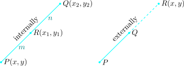
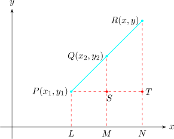
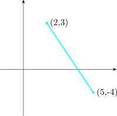

22.4 Division of a Line in a Given Ratio
Given any line segment \(PQ\) with coordinates. We can divide this line \(PQ\) in any given ratio internally or
externally.

22.4.1 Internal Division of a Line Segment
Let \((x_1,y_1)\) and \((x_2,y_2)\) be the Cartesian coordinates of the points \(P\) and \(Q\) respectively referred to rectangular
coordinates \(OX\) and \(OY\) and the point \(R\) divides the line segment \(PQ\) internally in a given ration \(m: n\) say
\(PR : RQ = m: n\)
We want to find the coordinates of \(R\).
Let \((x,y)\) be the required coordinates of \(R\) from \(PQ\) and \(R\) drawin \(PL, \hspace {0.2cm} OM\hspace {0.2cm}\) and \(\hspace {0.2cm} RN\).
\begin {align*} PS = LN = ON - OL & = x - x_1\\ PT = LM = OM - OL & = x_2 - x_1\\ RS = RN = RN - PL & = y - y_1 \end {align*}
\[\dfrac {PR}{RQ} = \dfrac {m}{n}\hspace {1cm},\hspace {1cm} \dfrac {RQ}{PR}= \dfrac {n}{m}\]
\begin {align*} \therefore \hspace {0.5cm} \dfrac {RQ}{PR} + 1 & = \dfrac {n}{m} + 1\\\\ \dfrac {RQ + PR}{QR} & = \dfrac {n + m}{n}\\\\ \dfrac {PQ}{PR} & = \dfrac {n + m}{m} \end {align*}
Now by construction the \(\triangle PRS\) and \(\triangle PQT\) are similar \[\dfrac {PS}{PT}= \dfrac {RS}{QT} = \dfrac {PR}{PQ}\]
Taking \(\hspace {0.4cm}\dfrac {PS}{PT} = \dfrac {PR}{PQ}\)
\[\dfrac {x - x_1}{x_2 - x_1} = \dfrac {m}{m + n}\hspace {0.5cm}\implies \hspace {0.5cm} x = \dfrac {mx_2 + nx_1}{m + n}\]
Taking \(\hspace {0.3cm}\dfrac {RS}{QT}= \dfrac {PR}{PQ}\)
\[\dfrac {y - y_1}{y_2 - y_1} = \dfrac {m}{m + n} \hspace {0.5cm} \implies \hspace {0.5cm} y = \dfrac {my_2 + ny_1}{m + n}\]
\(\therefore \hspace {0.5cm}\) The coordinates of \(R\) are \(\Bigg (\dfrac {mx_2 + nx_1}{m + n}, \dfrac {my_2 + ny_1}{m + n}\Bigg )\)
22.4.2 External Division of the Line Segment
Let \((x_1,y_1)\) and \((x_2,y_2)\) be the coordinates of \(P\) and \(Q\) respectively and the point \(R\) divides the line segment \(PQ\) externally in the ratio \(m: n\) \[\text {i.e}\hspace {0.4cm} PR : RQ = m:n\]
We want to find the coordinates of \(R\).

\begin {align*} PS = LM = 0M - OL & = x_2 - x_1\\ PT = LN = ON - OL & = x - x_1\\\\ QS = QM - SM = QM - PL & = y_2 - y_1\\ RT = RN - TN = RN - PL & = y - y_1 \end {align*}
\(\dfrac {PR}{PQ} = \dfrac {m}{n}\)
\begin {align*} 1 - \dfrac {QR}{PR} & = 1 - \dfrac {n}{m}\hspace {0.5cm} \implies \hspace {0.5cm} \dfrac {PR - QR}{PR} = \dfrac {m - n}{m}\\\\ \implies \hspace {0.4cm} \dfrac {PQ}{PR} & = \dfrac {m - n}{m}\\ \end {align*}
Taking \(\hspace {0.3cm}\dfrac {PS}{PT} = \dfrac {PQ}{PR}\)
\[\frac {x_2 - x_1}{x - x_1} = \frac {m - n}{m}\]
\(\triangle PQS\hspace {0.3cm}\) and \(\hspace {0.3cm} \triangle PRT\hspace {0.2cm}\) are similar \[\dfrac {PS}{PT}= \dfrac {QS}{RT} = \dfrac {PQ}{PR}\]
\[\implies \hspace {0.4cm} x = \dfrac {mx_2 - nx_1}{m-n}\]
The coordinates of \(R\) are \(\Bigg (\dfrac {mx_2 - nx_1}{m - n}, \dfrac {my_2 - ny_1}{m - n}\Bigg )\)
- 1.
- A point divides internally the line segment joining the points \((8,9)\) and \((-7,4)\) in the ration \(\hspace {0.2cm} 2:3\hspace {0.2cm}\). Find the coordinates of the point.
- 2.
- \(A(4,5)\) and \(B(7,-1)\) are two given points and the point \(C\) divides the line segment \(AB\) externally in the ratio
\(\hspace {0.2cm} 4: 3\). Find the coordinates of \(C\).
Find the ratio in which the line segment joining the points \((5,-4)\) and \((2,3)\) divided by the \(x-\)axis.
Solution.

Since \(x-\)axis divides the line internally \[P\Bigg (\dfrac {mx_2 + nx_1}{m + n}, \dfrac {my_2 + ny_1}{m + n}\Bigg )\]
\[\implies \hspace {0.5cm} P\Bigg (\dfrac {2m + 5n}{m + n}, \dfrac {3m - 4n}{m + n}\Bigg )\]
Along the \(x-\)axis \(\hspace {0.3cm} y = 0\)
\begin {align*} \therefore \hspace {0.5cm} \dfrac {3m - 4n}{m + n} & = 0 \hspace {0.5cm}\implies \hspace {0.5cm} 3m - 4n = 0\\\\ \implies \hspace {0.3cm} 3m & = 4n\\\\ \implies \hspace {0.3cm} \dfrac {m}{n}= \dfrac {4}{3} \end {align*}
\[\therefore \hspace {0.4cm} 4: 3\]
Questions on this section
Stuck on something here? Ask below and it stays attached to this topic.